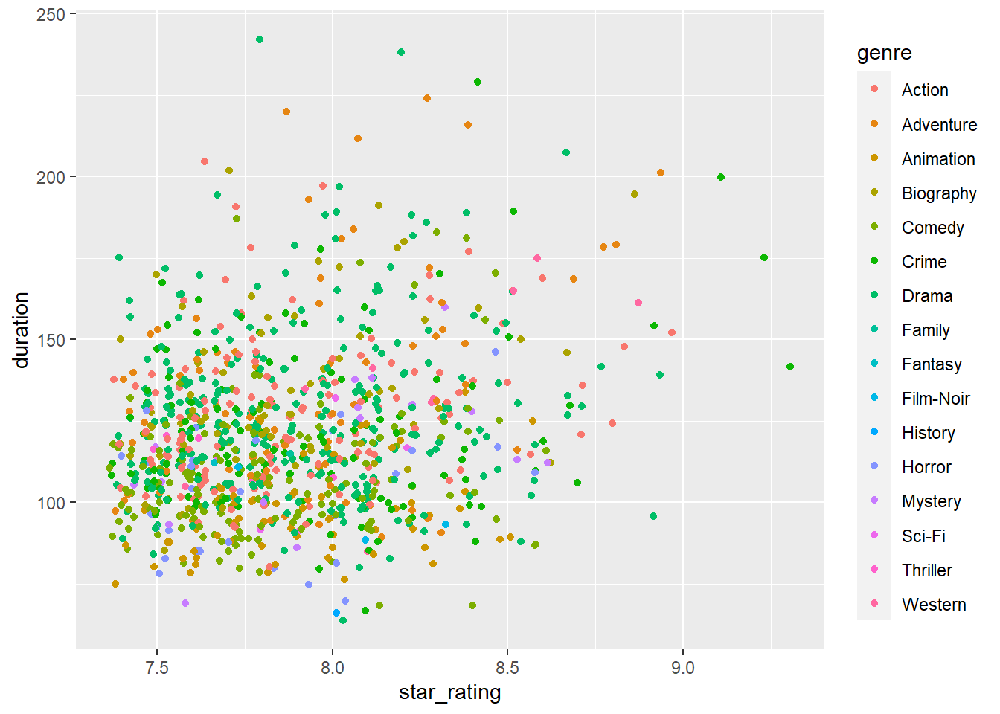
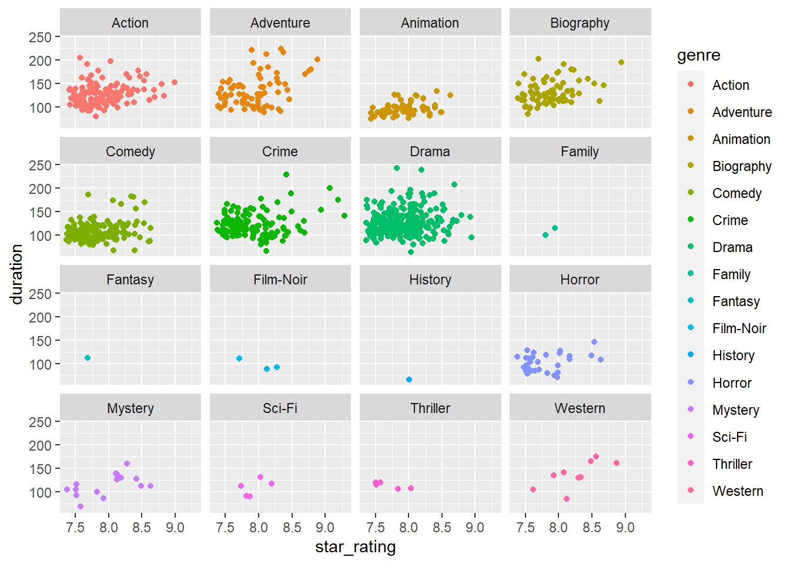

The purpose of this project is to work with data visualizations for new data, and manipulating the data frame in order to show what I want to know. It’s mainly just me playing around with data so I can become more comfortable with data frames and finding out what I can learn from the data and the visuals I can create.
I also chose to play around with modeling the imdb star rating.
Based on the models I created, I have a feeling that movie rating is mostly based on the plot line, quality of acting, and visual effects. None of which were included in the variables provided. There were too many actors listed to be able to figure out patterns in that data… at least not with my current skillset.
library(tidyverse)## -- Attaching packages --------------------------------------- tidyverse 1.3.1 --## v ggplot2 3.3.5 v purrr 0.3.4
## v tibble 3.1.6 v dplyr 1.0.8
## v tidyr 1.2.0 v stringr 1.4.0
## v readr 2.1.2 v forcats 0.5.1## -- Conflicts ------------------------------------------ tidyverse_conflicts() --
## x dplyr::filter() masks stats::filter()
## x dplyr::lag() masks stats::lag()library(dplyr)
library(broom)
library(openintro)## Loading required package: airports## Loading required package: cherryblossom## Loading required package: usdatalibrary(ggplot2)
imdb <- read_csv("C:/Users/rgood28/Documents/Data Sci Labs/extra_datafiles/data/imdb_1000.csv")## Rows: 979 Columns: 6## -- Column specification --------------------------------------------------------
## Delimiter: ","
## chr (4): title, content_rating, genre, actors_list
## dbl (2): star_rating, duration
##
## i Use `spec()` to retrieve the full column specification for this data.
## i Specify the column types or set `show_col_types = FALSE` to quiet this message.The first visual doesn’t tell me much of anything, but the second model is easier to read. It does look like there is a subtle trend that longer movies tend to have higher ratings, but not always.
ggplot(data = imdb, mapping = aes(star_rating, duration, color = genre))+
geom_jitter()
ggplot(data = imdb, mapping = aes(star_rating, duration, color = genre))+
geom_jitter()+
facet_wrap(~genre) This model is statistically significant however, it does not account for much of the variance in star_rating.
rate_genre <- lm(star_rating ~ genre, data = imdb)
summary(rate_genre)##
## Call:
## lm(formula = star_rating ~ genre, data = imdb)
##
## Residuals:
## Min 1Q Median 3Q Max
## -0.6556 -0.2623 -0.0500 0.1975 1.3831
##
## Coefficients:
## Estimate Std. Error t value Pr(>|t|)
## (Intercept) 7.88456 0.02865 275.186 <2e-16 ***
## genreAdventure 0.04877 0.04806 1.015 0.3104
## genreAnimation 0.02996 0.05120 0.585 0.5586
## genreBiography -0.02222 0.04765 -0.466 0.6411
## genreComedy -0.06212 0.03920 -1.585 0.1133
## genreCrime 0.03238 0.04149 0.780 0.4354
## genreDrama 0.01796 0.03496 0.514 0.6076
## genreFamily -0.03456 0.23800 -0.145 0.8846
## genreFantasy -0.18456 0.33536 -0.550 0.5822
## genreFilm-Noir 0.14877 0.19503 0.763 0.4457
## genreHistory 0.11544 0.33536 0.344 0.7307
## genreHorror -0.07766 0.06834 -1.136 0.2561
## genreMystery 0.09044 0.08831 1.024 0.3060
## genreSci-Fi 0.03544 0.15215 0.233 0.8159
## genreThriller -0.20456 0.15215 -1.344 0.1791
## genreWestern 0.37100 0.11500 3.226 0.0013 **
## ---
## Signif. codes: 0 '***' 0.001 '**' 0.01 '*' 0.05 '.' 0.1 ' ' 1
##
## Residual standard error: 0.3341 on 963 degrees of freedom
## Multiple R-squared: 0.02665, Adjusted R-squared: 0.01148
## F-statistic: 1.757 on 15 and 963 DF, p-value: 0.03614Significant at a lower p-value and has slightly greater adjusted r-squared
rate_duration <- lm(star_rating ~ duration, data = imdb)
summary(rate_duration)##
## Call:
## lm(formula = star_rating ~ duration, data = imdb)
##
## Residuals:
## Min 1Q Median 3Q Max
## -0.64707 -0.26168 -0.05199 0.21743 1.34901
##
## Coefficients:
## Estimate Std. Error t value Pr(>|t|)
## (Intercept) 7.5375344 0.0494364 152.469 < 2e-16 ***
## duration 0.0029117 0.0003994 7.291 6.37e-13 ***
## ---
## Signif. codes: 0 '***' 0.001 '**' 0.01 '*' 0.05 '.' 0.1 ' ' 1
##
## Residual standard error: 0.3275 on 977 degrees of freedom
## Multiple R-squared: 0.0516, Adjusted R-squared: 0.05063
## F-statistic: 53.15 on 1 and 977 DF, p-value: 6.366e-13Also slightly higher r-squared. Here, I condensed the movie ratings since there was only 1 TV-MA rating, a couple NC-17, and then approved/passed, unrated/not rated. Doing this made the regression results easier to read and interpret… but doing this makes it look like all the ratings making the overall star-rating to decrease.
imdb <- imdb %>%
mutate(movie_rating =
case_when(content_rating == "APPROVED" ~ "G",
content_rating == "PASSED" ~ "G",
content_rating == "G" ~ "G",
content_rating == "PG" ~ "PG",
content_rating == "PG-13" ~ "PG-13",
content_rating == "TV-MA" ~ "R",
content_rating == "NC-17" ~ "R",
content_rating == "R" ~ "R",
content_rating == "NOT RATED" ~ "R+",
content_rating == "UNRATED" ~ "R+",
content_rating == "X" ~ "R+"))
rate_content <- lm(star_rating ~ movie_rating, data = imdb)
summary(rate_content)##
## Call:
## lm(formula = star_rating ~ movie_rating, data = imdb)
##
## Residuals:
## Min 1Q Median 3Q Max
## -0.67009 -0.25171 -0.05171 0.22033 1.44829
##
## Coefficients:
## Estimate Std. Error t value Pr(>|t|)
## (Intercept) 8.02442 0.03527 227.516 < 2e-16 ***
## movie_ratingPG -0.14474 0.04598 -3.148 0.00169 **
## movie_ratingPG-13 -0.19585 0.04254 -4.603 4.71e-06 ***
## movie_ratingR -0.17271 0.03837 -4.501 7.60e-06 ***
## movie_ratingR+ 0.04567 0.04737 0.964 0.33516
## ---
## Signif. codes: 0 '***' 0.001 '**' 0.01 '*' 0.05 '.' 0.1 ' ' 1
##
## Residual standard error: 0.3271 on 968 degrees of freedom
## (6 observations deleted due to missingness)
## Multiple R-squared: 0.05852, Adjusted R-squared: 0.05463
## F-statistic: 15.04 on 4 and 968 DF, p-value: 6.193e-12This increased the adjusted r-squared value and is still significant, but none of the predictors particularly stand out to me.
rate_content <- lm(star_rating ~ movie_rating + genre + duration, data = imdb)
summary(rate_content)##
## Call:
## lm(formula = star_rating ~ movie_rating + genre + duration, data = imdb)
##
## Residuals:
## Min 1Q Median 3Q Max
## -0.7316 -0.2370 -0.0363 0.1838 1.3636
##
## Coefficients:
## Estimate Std. Error t value Pr(>|t|)
## (Intercept) 7.6473434 0.0696248 109.836 < 2e-16 ***
## movie_ratingPG -0.1489120 0.0448331 -3.321 0.000929 ***
## movie_ratingPG-13 -0.2308742 0.0434358 -5.315 1.33e-07 ***
## movie_ratingR -0.1898213 0.0394322 -4.814 1.72e-06 ***
## movie_ratingR+ 0.0379030 0.0473498 0.800 0.423626
## genreAdventure -0.0031121 0.0464651 -0.067 0.946613
## genreAnimation 0.0362997 0.0530452 0.684 0.493942
## genreBiography -0.0387764 0.0455133 -0.852 0.394439
## genreComedy -0.0443440 0.0383379 -1.157 0.247701
## genreCrime 0.0049680 0.0401812 0.124 0.901627
## genreDrama -0.0116737 0.0333599 -0.350 0.726466
## genreFamily -0.0816778 0.2257979 -0.362 0.717634
## genreFantasy -0.1313316 0.3163839 -0.415 0.678161
## genreFilm-Noir 0.0358630 0.1858616 0.193 0.847035
## genreHistory 0.0944730 0.3186591 0.296 0.766936
## genreHorror -0.0594241 0.0658379 -0.903 0.366977
## genreMystery 0.0463597 0.0841925 0.551 0.582010
## genreSci-Fi 0.0689275 0.1438141 0.479 0.631848
## genreThriller -0.2048204 0.1439226 -1.423 0.155026
## genreWestern 0.2656707 0.1089854 2.438 0.014964 *
## duration 0.0033376 0.0004263 7.829 1.30e-14 ***
## ---
## Signif. codes: 0 '***' 0.001 '**' 0.01 '*' 0.05 '.' 0.1 ' ' 1
##
## Residual standard error: 0.315 on 952 degrees of freedom
## (6 observations deleted due to missingness)
## Multiple R-squared: 0.1415, Adjusted R-squared: 0.1234
## F-statistic: 7.844 on 20 and 952 DF, p-value: < 2.2e-16